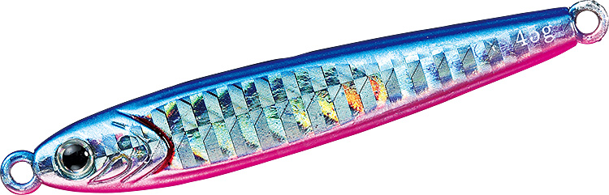
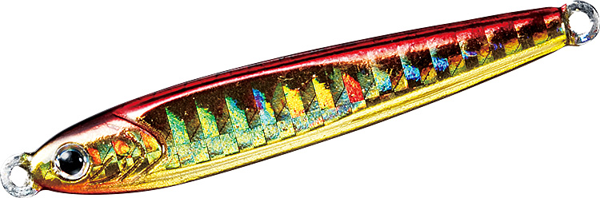
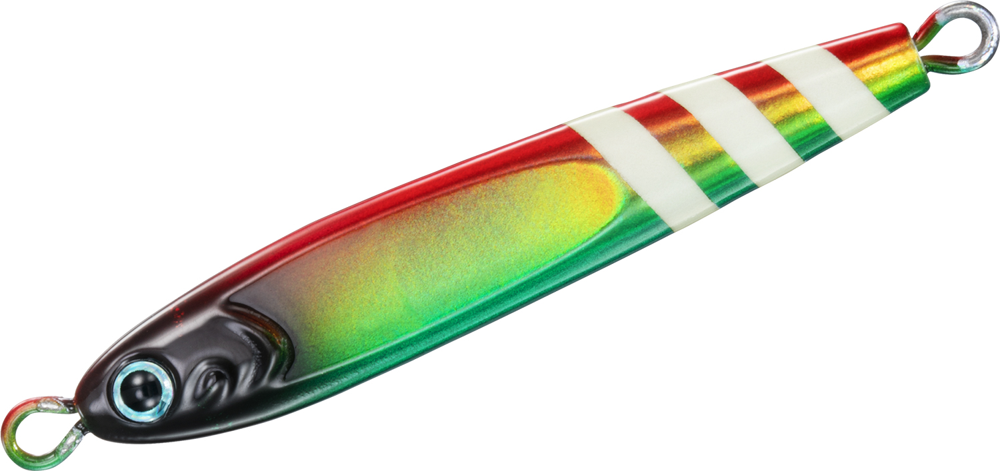
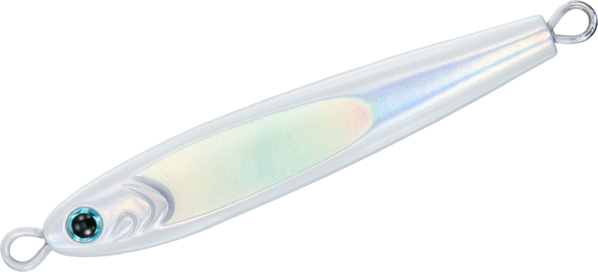
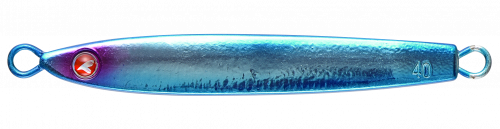
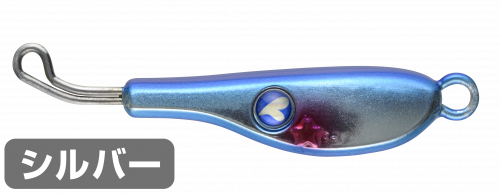

TGベイト
（TG BAIT）
TGベイト（TG BAIT）はDAIWA（ダイワ）のタングステン製メタルジグです。
鉛の約1.7倍の比重を持つタングステンで、小さいシルエットのまま重さを出せるので、極小のベイトを偏食する青物にも口を使わせられるのが最大の魅力です。

画像出典:DAIWA公式HP
スペック
- メーカー
- DAIWA（ダイワ）
- タイプ
- タングステン製 高比重コンパクトキャスティングジグ
- 素材
- タングステン
- 重さ
- 30g〜250g（10サイズ）
- 全長
- 55mm（30g）〜130mm（250g）
- フック
- なし（別売りのアシストフックを付けて使う）
- ターゲット
- 青物・サワラ・根魚など
- 価格
- 1,800円〜8,800円（税抜・メーカー希望本体価格）
▼今すぐチェック
TGベイトの特徴
小さく重いタングステンで、食わない青物に口を使わせるコンパクトジグ
-
小さなシルエットで遠投できる
タングステンは鉛の約1.7倍の比重。同じ重さでもずっと小さく作れるので、小さなシルエットのままストレスなく遠投できる。ナブラやボイルに届かせたいのに、小さいジグでは飛ばない、という悩みを解決する。
-
極小のベイトに合わせられるリアルシェイプ
イワシを思わせるリアルなシェイプ。ターゲットが小さなベイトだけを選んで食べている時でも、シルエットを合わせて食わせられる。
-
泳ぎとフォールを両立した左右非対称ボディ
高比重のボディをしっかり動かすため、左右非対称のデザインを採用。リトリーブでは確実に泳ぎ、フォールでは水平に近い姿勢でスライドして、弱ったベイトを演出する。
TGベイトの使い方
ショアでもオフショアでも、キャストして沈め、ただ巻きやジャークで泳がせ、合間のフォールで食わせるのが基本です。
小さく重いので沈むのが速く、深いレンジや潮の速い場所でも底を取りやすいのが強み。フックは付いていないので、重さに合ったアシストフックを付けて使いましょう。
TGベイトの得意な状況
青物のナブラやボイルがあるのに、いつもの大きなジグでは食わず、小さいジグでは届かない、という場面が一番の出番です。
イワシのシラスやカタクチなど、極小のベイトを偏食している時でも、シルエットを合わせて釣れるのがTGベイトの強みです。
30g〜60gはショアジギングやボートからのキャスティング、80g以上はオフショアのジギングで、深場や潮の速い場所を攻める時に向いています。
ワンポイント
タングステンのジグは価格が高めなので、根の荒い場所では、まず鉛のジグで地形を確かめてから投げるとロストを減らせます。食いが渋い時や、ベイトが小さい時の「切り札」として持っておくと心強い1本です。
TGベイトの重さとサイズの使い分け
| 重さ | 全長／価格（税抜） | 得意な場面 |
|---|---|---|
| 30g | 55mm／1,800円 | ショアジギングで小さなベイトに合わせたい時 |
| 45g | 64mm／2,200円 | ショアジギングの基本の重さ |
| 60g | 68mm／2,700円 | 遠投したい時や、潮の速い場所のショアジギング |
| 80g | 80mm／3,600円 | ボートからのキャスティングや浅めのジギング |
| 100g | 87mm／4,300円 | オフショアジギングの基本の重さ |
| 120g | 92mm／5,100円 | 深めのポイントや潮の速い時のジギング |
| 150g | 99mm／5,900円 | 水深のある場所のジギング |
| 180g | 105mm／6,350円 | 深場や二枚潮の時に |
| 210g | 113mm／7,200円 | 深場のジギング |
| 250g | 130mm／8,800円 | もっとも深い場所や潮の速い時に |
価格はメーカー希望本体価格（税抜）です。タングステンの価格高騰で、販売価格は上がっています。ショア向けの細身の「TGベイト スリム」、スーパーライトジギング向けの「TGベイト SLJ」、タチウオ向けの「TGベイト タチウオ」などのシリーズもあります。
人気カラー
TGベイトの人気カラーを紹介します。

PHブルピン青物狙いの定番の配色。迷った時の1色に。

PH赤金朝夕のマズメや濁りの入った日に強いカラー。

FHトロピカルゼブラ赤・黄・緑のフラッシュホロにグローのゼブラ。濁りや朝マズメ、深場で目立たせたい時に。

FHグローエッジシルバーグローのエッジで、深場や薄暗い時間でも目立つカラー。
画像出典:DAIWA公式HP
▼今すぐチェック
TGベイトに似ているルアー
-
 メタルマジックTG
アクアウェーブ
詳細はこちら＞
メタルマジックTG
アクアウェーブ
詳細はこちら＞
タングステン製のスピンテールジグ。ブレードのアピールも足して、小さなベイトを食べている魚を狙う時に。
-

フォルテンTG ブルーブルー 詳細はこちら＞タングステンの飛距離と速いフォールが武器の、小さなシルエットのジグ。
-

TGストライク ブルーブルー 詳細はこちら＞タングステンとリアバランスのブレードジグ。ただ巻きで広く探りたい時に。